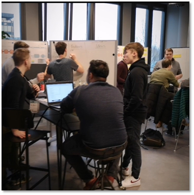

Wie ben ik

Ik ben Bart,
een
Ik ben Bart Peeters, 25 jaar oud en kom uit Wijshagen. Al van kleins af aan ben ik gefascineerd door alles wat met een computer te maken heeft, zei het hard- of software. Al van een jonge leeftijd ben ik bezig met het in- en vooral uit elkaar draaien van computers, laptops en dergelijke. Al dan niet met toestemming van mijn ouders. Op een latere leeftijd heb ik een passie ontwikkelt voor het opzetten, configureren en beheren van verschillende systemen. Naast het systeem- en netwerkbeheer gedeelte toon ik ook interesse in het creëren van simpele applicaties. Zoals bijvoorbeeld het maken van een spel en deze op de Google Playstore plaatsen. Hiernaast ben ik veel bezig met sport, boeken en ben ik een echte game fanaat.
Vaardigheden
Portfolio
- Alle
- Internationalisering
- Seminaries
- Innovatie
- Persoonlijke ontwikkeling
- Student engagement/wedstrijden
-
Prometheus IN-UITS
Workshop voor de basis van Prometheus
- PXL Hasselt
- 3/03/2020
- 3 uur
-
Secwise
Seminarie over cloudoplossingen en hoe we deze kunnen beveiligen.
- PXL Hasselt
- 21/10/2020
- 3 uur
-
Fourcast
Wat is Fourcast en hoe beïnvloed Cloud de toekomst
- PXL Hasselt
- 28/10/2020
- 3 uur
-
Ericsson
Telefoonlijnen, 4G, 5G en de toekomst
- Online
- 25/11/2020
- 3 uur
-
Gluo
Hoe datawarehouse automatiseren d.m.v. Vaultspeed
- PXL Hasselt
- 10/03/2020
- 3 uur
-
IT@Breakfast: Droneport
Wat is Droneport en wat is hun kijk op de toekomst
- PXL Hasselt
- 20/02/2019
- 2 uur
-
Politie Federal Computer Crime Unit
Uitdagingen in de wereld van e-fornsics & cybercrime
- PXL Hasselt
- 24/04/2019
- 2 uur
-
Essers
Werking van Essers met betrekking tot hun systemen en cités
- PXL Hasselt
- 8/05/2020
- 3 uur
-
Digital@Breakfast Facebook en ik
Uitleg over privacy rond Facebook en jezelf
- PXL Hasselt
- 22/05/2020
- 2 uur
-
Techscape AE
Online escape room i.v.m. cybersecurity
- Online
- 1/02/2021 - 22/02/2021
- 25 uur
-
Cybersecurity Challenge
Cybersecurity Challenge m.b.t. Capture the flag
- Online
- 07/03/2021 - 09/03/2021
- 25 uur
-
Projectweek 2TIN
Introductieweek en start tweedejaarsproject
- PXL Hasselt
- 11/02/2019 - 16/09/2019
- 26 uur
-
POP-sessies 2TIN
POP-sessies m.b.t. persoonlijke ontwikkeling
- PXL Hasselt
- 4/10/2019
- 10 uur
-
Studiereis Paderborn/Berlijn
Studiereis Paderborn/Berlijn
- Paderborn/Berlijn
- 12/02/2020 - 17/02/2020
- 30 uur
-
Innovatieroute Security
Innovatieroute Security (Seminaries + Workshops)
- PXL Hasselt
- 1/10/2020 - 8/10/2020
- 25 uur
Gekozen activiteiten
-
12/02/2020 - 17/02/2020
Studiereis Paderborn/Berlijn
Internationalisering
Omschrijving
De studiereis naar Paderborn en Berlijn stond in het kader van internationalisering. Dit sluit persoonlijk bij aan bij het gedeelte ‘’(internationale) samen(net)werking” Van de X-Factor. De reis bestond uit 5 boeiende dagen, waarbij er verschillende culturele, maar ook leerrijke activiteiten gepland stonden. Zo hebben we samengewerkt met Fraunhofer Instituut gelegen te Paderborn. Het Instituut is te zien op de volgende foto:
Daarnaast werd er ook de Stasigevangenis Hohenschönhausen en Tempelhof luchthaven in Berlijn bezocht. Deze twee bezoeken waren meer op een cultureel vlak ten opzichte van de samenwerking bij Fraunhofer Instituut waar we op technisch vlak alsook op vlak van communicatie hebben samengewerkt.
Een laatste onderdeel in deze studiereis was de rondleiding rond Berlijn. Waarbij we samen met een gids de verschillende bekende monumenten en plaatsen van Berlijn bezochten.
Tijdens deze reis is gebleken dat het niet alleen om een culturele ervaring ging, maar ook een verrijking op sociaal en technologisch vlak. Niet alleen hebben we vrije momenten gehad om Paderborn en Berlijn te bezoeken, alsook de rondleiding rond Berlijn, de gevangenis en het vliegveld. Ook hebben we door de samenwerking met Fraunhofer nieuwe connecties kunnen leggen met invloedvolle personen in het buitenland en op technologisch vlak veel kunnen bijleren, wat aansluit bij het technologische gedeelte van onze opleiding.
Verslag
Woensdag 12 februari 2020
Op Woensdag 12 februari vertrokken we rond 15:30 richting Paderborn vanuit Hogeschool PXL. We hadden net de jobbeurs achter de rug. De busrit was gelukkig niet saai, waardoor de tijd niet voorruit zou gaan. Er werd veel gelachen, gepraat, muziek afgespeeld en nieuwe vrienden gemaakt. Er waren een paar tussenstops waardoor we onze benen konden strekken, alsook de mogelijkheid hadden om een versnapering of drinken te kopen. De busrit duurde de hele dag, hierdoor kwamen we rond acht uur ’s avonds aan in Paderborn. Na het aankomen aan het hotel en het weg zetten van onze tassen, waren we de hele avond vrij. Sommige kozen ervoor in het hotel te blijven op hun kamer, of in het café gedeelte van het hotel. Andere kozen ervoor Paderborn te verkennen. Zelf ben ik erop uit gegaan met een aantal vrienden en zijn we bij een steakhouse gaan eten. Hierna hebben we in een nabij gelegen café een paar drankjes genuttigd, waarna we terug naar het hotel zijn gewandeld en zo onze eerste dag hebben afgesloten.
Donderdag 13 februari 2020
Na de eerste nacht en een ontbijt in het hotel vertrokken we rond half acht richting het Fraunhofer Instituut. Eenmaal aangekomen werden we in het onthaal hartelijk verwelkomt. We werden in verschillende groepen gedeeld, op dit moment hadden we nog geen idee wat er ging gebeuren. Na het indelen van de groepen werden we gevraagd ons te verplaatsen naar een andere ruimte. Het eerste wat hier opviel was het podium.
Hier ontmoeten we Asmar Laban, een super toffe persoon die instond voor de Product and Production Management bij Fraunhofer. Laban vertelde ons het plan, we waren opgedeeld in negen groepen en zouden de komende twee dagen werken aan een product voor smart shutters in samenwerking met Heroal, een bedrijf gespecialiseerd in shutters. De bedoeling was deze verbeteren op vlak van specificaties of iets volledig nieuws hierrond ontwikkelen.
Vervolgens kregen we een toespraak van Heroal zelf. Er werd ons meer vertelt over het bedrijf, het verleden hiervan, alsook de toekomstplannen en waarom ze meededen aan deze Makeathon. Na de verschillende introducties en uitleg over het idee rond de Mackathon mochten we naar onze werkplek gaan. Eenmaal aangekomen vlogen we er direct in. Ideeën werden uitgewisseld tussen de groepsleden, alsook tussen de groepsleden, Laban en Heroal. Veel ideeën kwamen boven, maar de uiteindelijke winnaar van ons idee was het creëren van een module voor een DIY persoon.
Rond deze tijd was het middag en dus ook tijd voor een middag lunch. Gelukkig moesten we er niet zelf op uit in Paderborn om een restaurant te vinden. Fraunhofer zorgde elke beide dagen voor eten en drinken doorheen de dag.

Na een welverdiend middagmaal was het tijd voor onze eerste pitch. Hier zou elk team zijn idee, alsook de naam van het product voorstellen in een korte pitch van 1 minuut. Enkel was er een probleem, onze groep had nog geen naam. Niemand kwam echt op een goed idee, totdat ik uit het niets “smeasy” zei. Het klonk raar, maar het bleef hangen en dat was net wat we zochten. Smeasy zou later staan voor: Shutters Made Easy. Een perfecte naam voor een perfecte tweedaagse activiteit.

Rond zeven uur was het tijd om de bus terug naar het hotel te nemen. Eenmaal terug aangekomen in het hotel was het tijd voor het avondeten. Samen met een aantal vrienden zijn we naar een Korean Barbecue gegaan. Dit is een echte aanrader voor mensen die van groenten, grillen en veel vlees houden. Na het avondmaal zijn we samengekomen met een aantal andere vrienden waarna we gezellig iets gaan drinken zijn tot in de ‘vroege’ uurtjes om hierna terug naar het hotel te wandelen.
Vrijdag 14 februari 2020
Na een korte nacht, konden we opnieuw genieten van een ontbijt in het Hotel. Na het ontbijt vertrokken we terug richting het Fraunhofer Instituut. Eenmaal aangekomen mochten we direct verder werken aan ons project. De laatste dag ging vooral over het afmaken en verbeteren van ons product en de presentatie die we zouden geven hierover. De laatste presentatie was opnieuw een pitch, maar dit maal zaten er verschillende personen van Heroal in de jury, alsook de lectoren. Verder werd ons product, de webpagina, filmpje en extra diverse producten door een externe jury beoordeeld. Na het geven van de pitch was het afwachten voor de prijsuitreiking. Het verdict? De externe jury vond ons product, filmpje en speciaal gemaakt doosje fantastisch. De jury vond ons product ook interessant. Hierdoor zaten we in de finale. Toch komt aan elk mooi stukje een einde. Uiteindelijk werd ons team tweede. Jammer, maar helaas. Toch was het een fijne en unieke ervaring en ben ik blij dat ik hieraan heb kunnen meedoen.
Na de prijsuitreiking hadden we nog even de tijd om met de mensen van Fraunhofer en Heroal te praten. Zo heb ik contact kunnen leggen via LinkedIn met Heroal en Laban.
Na een toffe twee daagse in Paderborn was het tijd om te vertrekken richting Berlijn. Na het vertrekken bij Fraunhofer zijn we richting het hotel vertrokken om ons uit te checken. Hierna zijn we met de bus vertrokken richting Berlijn om zo rond acht uur ’s avonds aan te komen. Eenmaal aangekomen en ingecheckt in het hotel, was het tijd om Berlijn te verkennen. De eerste avond was vooral een verkenningsavond. We zijn doelloos beginnen rondwandelen in Berlijn, hebben verschillende monumenten en plaatsen gezien en hebben uiteindelijk de metro richting Alexanderplatz genomen om ook hier rond te wandelen. Na een korte wandeling vonden we een leuk cafétje waar ze lekkere cocktails en eten serveerde. Na een geslaagde avond hebben we de metro terug richting het hotel genomen en zijn we gaan slapen.
Zaterdag 15 februari 2020
Het weekend was aangebroken, dit betekende dus jammer genoeg de laatste twee dagen van de studiereis. Vandaag stond alles in het kader van culturele verrijking. De grote groep waarmee we naar Berlijn vertrokken werd opgedeeld in twee groepen. Zelf zat ik in groep 1. Deze groep ging eerst naar Stasigevangenis Hohenschönhausen om hierna naar Tempelhof luchthaven te vertrekken terwijl groep 2 het omgekeerde zou doen. Rond acht uur ’s morgens hadden we een ontbijt op het hotel. Hierna konden we terug naar onze kamers gaan. Rond half tien werden we verwacht aan de ingang van het hotel. Hier werden zoals eerder aangehaald de groepen gesplitst en vertrok iedere groep naar zijn bestemming. Zo vertrokken wij richting de gevangenis. Eenmaal aangekomen en de prachtige rijkunsten van de buschauffeur gezien te hebben, werden we verwacht in een kamertje buiten de gevangenis. Hier sprak een voormalige gedetineerde ons toe. Hij vertelde ons meer over de gevangenis waar we ons in bevonden en waarvoor deze diende. Na een kort en bondige uitleg over de algemene kennis van de gevangenis was het tijd om deze daadwerkelijk te bezoeken en de verschillende kamers en ruimtes te bezoeken. Zelf heb ik het niet echt op gevangenissen, maar dit was van een ander kaliber.
Je voelde een rare sfeer in de lucht hangen. Dit samen met de uitleg die gegeven werd over wat er gebeurde met de personen die hier belande zorgde voor een rilling door je ruggengraat. Zo had je bijvoorbeeld een kamer waar je ondervraagd werd. Hier had je tralies voor de raam, maar toch had je in tegenstelling tot je ‘kamer’ waar je 24/7 verbleef op een stenen bed een comfortabele stoel. Dit was allemaal zo in scene gezet dat je mentaal brak, met gevolg dat je informatie los liet, mensen verraadden of in ging op beschuldigingen waar je niets mee te maken had.

Een andere kamer had een camionette in de garage staan. Deze camionette zorgde voor de transportatie van de verschillende personen van en naar de gevangenis. Deze camionette was zo opgemaakt dat het niet op een gevangenis camionette leek, maar een normale hedendaags voertuig. Dit zorgde ervoor dat niemand door had dat in dit voertuig een kleine kooi stond waarin ze de verschillende personen staken. (Een soort gelijke camionette zie je in de volgende foto)
Hierna volgde nog meerdere kamers en kruipkelders, om zo terug aan de ingang van de gevangenis te komen. Eenmaal terug aangekomen kregen we een paar minuten pauze. Na de pauze werden we terug naar de bus gebracht om zo door te rijden naar de Tempelhof luchthaven. Hier werden we vriendelijk ontvangen door onze gids. En kregen we een rondleiding door de nu gesloten luchthaven. Zo hebben we de verschillende terminals gezien, vliegtuigen die gebruikt werden in de tijd van de tweede wereldoorlog, alsook de verschillende kelders die gebruikt werden wanneer er mosterdgas bommen gebruikt werden in de buitenlucht.

Een ander puntje tijdens de rondleiding wat zeker is bijgebleven was de reusachtige ruimte met reuze pillaren aan beide kanten. Deze ruimte was oorspronkelijk bedoelt als een riante ontvangstruimte met hoge plafonds. In de uiteindelijke uitvoering is jammer genoeg een tussendek gebouwd tussen de inkomhal op het gelijkvloers en de erehal op de hogere verdieping. Hierdoor is de oorspronkelijke hoogte van de ruimte niet meer de te zien en is de erehal ook nooit afgewerkt. Na deze geslaagde rondleiding was het tijd om terug naar het hotel te gaan. Eenmaal aangekomen heb ik gekozen op hotel te blijven en zo de dag af te sluiten.
Zondag 16 februari 2020
Op de voorlaatste dag kregen we na het ontbijt de kans om een culturele tour te doen door Berlijn. Dit gebeurde via een busrit en een gids. Zo konden we vanuit de bus verschillende monumenten en plaatsen bezoeken zonder uit te stappen en kon alles ook vlot verlopen. Zo zijn we doorheen de dag langs de Berlijnse Muur, Checkpoint Charlie, Brandenburger Tor & Unter den Linden en Potsdamer Platz gekomen om een paar op te noemen. Andere plekken zoals het Holocaust monument en Bebelplatz boekenverbranding konden niet met de bus gedaan worden. Hiervoor werd tijd voorzien om uit te stappen en deze plek te gaan bezichtigen doormiddel van een tour te voet. Dit deden we ook met een gids. Jammer genoeg heb ik niet veel gezien van de verschillende monumenten omdat de gids tegen een olympisch snelwandelaars tempo liep. De tour eindigde rond vijf uur. Hierna waren we vrij voor de avond en werd er gekozen om samen met de groep en enkele lectoren iets te gaan drinken. Na een geslaagde avond werd er terug naar het hotel gewandeld om zo de avond af te sluiten.
Maandag 17 februari 2020
De laatste dag van de studiereis was net zoals de eerste dag. We zaten de hele dag in de bus. Na het ontbijt ’s morgens om zeven uur werd er verwacht dat we onze tassen zouden inpakken en uitcheckte voor acht uur. Om acht uur vertrok de bus terug richting Hogeschool PXL te hasselt. De terugreis was zoals de heenreis een plezante ervaring.
Reflectie
Tijdens deze studiereis is er de kans geweest om zeer veel bij te leren. Niet enkel op vlak van een technologisch standpunt, maar ook op vlak van cultuur, soft skills, en sociaal zijn. Het was een leuke studiereis waarbij er veel geleerd kon worden op alle vlakken. Ook was het een studiereis waar niet enkel serieuze presentaties of seminaries gedaan werden. Het was een toffe ervaring met veel boeiende en interessante onderdelen. Een ander tof gebeuren is dat de studiereis ons allemaal dichter bij elkaar heeft gebracht. Op het begin liep het wat stroef of waren er groepjes gemaakt, maar naar het einde toe werden we steeds meer en meer een vriendengroep.
Een samenwerking met het Fraunhofer Instituut is niet iets wat iedereen kan doen. Hierdoor was het ook zeer boeiend en interessant om dit mee te maken. De mensen die hier werken doen hun job graag en tonen dit ook door zeer spontaan over te komen en echt iets te willen bereiken met ons. Hierdoor was de samenwerking tussen Hogeschool PXL en Fraunhofer zeer goed en hebben we allemaal iets kunnen bijleren van elkaar.
Een ander interessant punt is dat dit een internationaal programma was. Op deze manier kun je als student je grenzen verrijken, maar toch nog steeds met je studies bezig zijn. Je leert werken in nieuwe omgeving. Verder leert een student omgaan met nieuwe mensen, andere culturen en talen. Door de huidige toestand thuis, alsook op school kon ik geen stage in het buitenland doen. Hierdoor had ik geopteerd om een studiereis te doen naar Berlijn. Op deze manier kon ik toch een beetje van een buitenlandse studie opsnuiven.
Deze studiereis was vooral een zeer leuke en interessant studiereis waar niet alleen ik, maar ongetwijfeld iedereen zeer veel heeft bijgeleerd. Op technologisch vlak hebben we leren samen werken met andere grote bedrijven. Op cultureel vlak hebben we de geschiedenis van Berlijn leren kennen doormiddel van een gids, rondleidingen en ontdekkingen. Op deze manier heeft iedereen iets kunnen doen waar hij/zei iets heeft van kunnen leren. De lectoren die je normaal enkel op school ziet, zie je ook eens in een ander daglicht. Ze zijn losser, goedlachs en hebben vaak interessante verhalen te vertellen over voorgaande studiereizen of dergelijke.
-
07/03/2021 - 09/03/2021
Cybersecurity Challenge
Student engagement/wedstrijd (Hackathon)
Omschrijving
Sinds het eerst dit jaar hebben alle studenten de kans om mee te doen aan een soort van “hackathon”. Dit betekent dat niet enkel SNB, maar ook SWM en AON de kans krijgen om aan een security challenge mee te doen. Deze zijn op maat gemaakt voor elke afstudeerrichting, zodat iedereen de kans krijgt zich te bewijzen. Voor de afstudeerrichting Systeem- en Netwerkbeheer was dit de Cyber Security Challenge.
De Cyber Security Challenge bestaat uit verschillende opdrachten die je samen met een team moet voltooien. Deze opdrachten bestaan uit makkelijkere onderdelen zoals: opzoekwerk waar je het antwoord vindt op een webpagina of forensisch, maar ook moeilijkere opdrachten zoals reverse engineering en web applicatie opdrachten. In elk van deze secties staan meerdere opdrachten. Zo heb je x aantal opdrachten die 10, 20 of zelfs 50 punten waard zijn. Deze zijn relatief makkelijke op te lossen. Verder bestaan er ook opdrachten die 100, 200 of meer punten waard zijn. Deze zijn vaak moeilijk op te lossen. De bedoeling is dat je zoveel mogelijk opdrachten oplost en probeert door te stoten naar de finale, om zo de Cyber Security Challenge te winnen.
Verslag
Dit jaar, zoals elk jaar organiseert Cyber Security Challenge Belgium een hackathon waarbij studenten de kans krijgen verschillende opdrachten uit te voeren en zo strijden voor de meeste punten in een tweedaagse activiteit. De hogeschool PXL heeft er dit jaar voor gekozen de Cyber Security Challenge op te nemen in het I-Talent gedeelte. Hierdoor werd de hackathon een verplicht onderdeel in de opleiding. Persoonlijk vind ik dit niet erg sinds ik vorig jaar ook had meegedaan aan de hackathon.
Persoonlijk ben ik niet goed in het oplossen van de meeste onderdelen die aangeboden worden, maar dit is de perfecte kans om je skillset bij te schaven. Hierdoor heb ik me net zoals vorig jaar voorbereid door verschillende video’s te kijken betreffende “Capture The Flag”. Hieruit leer je niet alleen hoe dat bepaalde onderdelen opgelost moeten worden, maar ook welke tools je kan gebruiken. Bepaalde tools zal ik later in het verslag aanhalen.
Sinds Corona heerst en we niet naar de campus konden gaan dit jaar was het samenwerken in team een taak op zich. Normaal ontmoet je elkaar ergens op de campus of wordt er een plaats voorzien waar dat de studenten kunnen werken. Jammer, maar helaas was dit niet het geval dit jaar. Hierdoor moesten de studenten noodgedwongen vanuit hun thuis werken. Hierdoor hebben mijn team en ik ervoor gekozen op samen te werken via het platform “Discord”. Dit is een zeer bekend platform en was dus ook niet ongekend. Via dit platform bestaat er de mogelijkheid om je scherm te delen, voice chat, tekst chat, bestand overdracht en video chat.
In het volgende gedeelte haal ik een aantal tools aan.
HEX naar ASCII waardes
Zo bestaan er tools voor het omzetten van bepaalde HEX files naar ASCII waardes. Bij het gebruiken van Linux kan je gebruik maken van “xxd”. Voor Windows bestaan er verschillende tools, maar de meest bekende is “Notepad++”.
Reverse Engineering met Apktool
Een andere tool die nodig is geweest tijdens het oplossen van twee opdrachten was Apktool. Deze tool doet reverse engineering op een APK. Reverse engineering wil zeggen dat we een bepaald bestand of toepassing probeert te begrijpen door middel van deductieve redenering. Dit doen we om te begrijpen hoe een bepaald apparaat, proces, systeem of in ons geval APK een taak uitvoert.
Steganografie met GIMP
Een laatste tool is bijvoorbeeld GIMP. Wij hebben GIMP gebruikt bij het onderdeel Steganografie. Er waren bepaalde opdrachten waarbij er een tekst of vlag verbogen zat achter een foto. Deze foto moesten we aanpassen doormiddel van het toevoegen en verwijderen van bepaalde lagen die in de foto gebruikt werden. Soms was dit gecomprimeerd en ging dit niet zo gemakkelijk. Bij andere opdrachten was het veranderen van de kleuren genoeg om de vlag te achterhalen.
In het volgende onderdeel zal ik een aantal opdrachten aanhalen die we al dan niet volledig opgelost hebben met behulp van dit soort programma’s , teamwork en een beetje gezond verstand.
Get_flipped.zip
Tijdens een van de opdrachten kregen we een .zip bestand met de uitleg dat er iets mis was met het bestand, waardoor dit niet goed geopend werd. Deze opdracht was een relatief makkelijke opdracht waarbij het de bedoeling was dat we de inhoud die in de zip stond volledig moesten spiegelen. Met een scriptje wat je in de foto hieronder kan zien konden we dit wegschrijven naar een ander bestand en zo de vlag te pakken krijgen.
Memcrashed with Memcached
Deze opdracht ging rond een server die niet meer naar behoren functioneerde, met de uitleg dat er wel een Memcached systeem draaide op deze server en een IP-adres zodat we konden telnetten naar deze server. Na het opzoeken van Memcached en hoe dit juist in zijn werk gaat vonden we een commando dat de verschillende statistieken laat zien.
Hier zagen we niet direct iets bruikbaar instaan. Hierdoor moesten we iets verder zoeken in de richting van het “stats” commando. Na enige zoeken vonden we dat een memcashed server een onderdeel genaamd “items” bijhoud. Door het “stats” commando hierop toe te passen zagen we twee items.
Door in deze items te zoeken met behulp van bepaalde commando’s vonden we een item genaamd bandera. Bandera betekent vlag in het Spaans. Hierdoor wisten we ook dat we in de goede richting aan het zoeken waren.
Het enige wat nu nog moest gebeuren was uitzoeken hoe dat we het item “bandera” konden uitLezen. Na een tijdje te zoeken vonden we dat je het “get” commando kan gebruiken voor een item uit te Lezen. Door dit toe te passen kregen we uiteindelijk de vlag en was de opdracht opgelost.
Het uiteindelijk resultaat was dat ons team het 100ste geëindigd is van de 250 deelnemers. Dit is niet bepaald een goede plaats en was ook niet de plaats die we verwacht hadden te bereiken, maar het is wel een plaats waar we trots op mogen zijn. Doorheen de twee dagen zijn er geen hints gevraagd of heeft het team niet de hints bekeken die in de Cyber Security Challenge Discord geplaatst werden. Misschien is dit niet slim geweest, maar hebben we wel alles uit de kast gehaald om het zo goed mogelijk te doen zonder enige externe hulp.

Reflectie
Deze opdracht heeft niet alleen mij de mogelijkheid gegeven om veel bij te leren, maar het was ook meteen een manier om beter in een team te leren werken tijdens speciale omstandigheden. Een voordeel van Corona was het feit dat zelfs in deze tijd ik de mogelijkheid heb om samen te werken met een groep mede junior-collega’s en prachtige dingen tot stand kan laten komen.
Hierdoor is de Cyber Security Challenge niet alleen iets in het kader van het afstuderen, maar sluit het ook perfect aan bij de X-factor. Je bent niet enkel bezig in een team waardoor je aan samenwerking doet, maar je bent ook op je eigen bezig voor een opdracht op te lossen. Je bedenkt bepaalde manieren hoe je al dan niet de gevraagde oplossing kan bekomen. Op deze manier ben je niet enkel ondernemend, maar ben je ook innovatief doordat je met nieuwe ideeën komt. Verder is het niet voor iedereen even makkelijk deze tijden, en vooral niet wanneer je vanuit je thuis moet werken aan een schoolopdracht die eigenlijk bedoelt is om in team aan te werken. Als mede junior-collega en teamgenoot van zo een student kan je compassie tonen en deze persoon een hart onder de riem steken.
Zelf heb ik tijdens deze opdracht mijn huidige skill set kunnen gebruiken voor het oplossen van bepaalde opdrachten. Opdrachten waarbij we niet genoeg kennis hadden om deze op te lossen, hebben we samen als een team opgelost en hierdoor onze skill set gezamenlijk verbeterd. Hierdoor heb ik mijn huidige kennis verbeterd en heb ik nieuwe kennis opgedaan. Deze kennis kan ik meenemen naar een latere carrière en toepassen indien nodig. Ook heb ik geleerd dat je jezelf moet aanpassen aan andere en soms even iets rustig moet uitleggen. Vaak gaat het niet even vlot of is iemand niet direct mee met je denkwijze en in plaats van hier een opmerking over te maken kan je best deze persoon uitleggen wat je nu juist bedoelt.
Een laatste puntje van de X-factor die toegepast is geweest is het multidisciplinair zijn. Ik ben een Systeem- en Netwerkbeheerder, maar toch heb ik tijdens deze opdracht taken moeten doen die in de branche van een Applicatie ontwikkelaar vallen. Denk hierbij aan het creëren van bepaalde python of PHP scriptjes voor het oplossen van een opdracht. Deze kennis en ervaringen neemt niemand mij af en zal ik in de toekomst goed kunnen gebruiken indien nodig.
-
1/02/2021 - 22/02/2021
Techscape AE: Escape Room
Student engagement/wedstrijd
Omschrijving
Doelstelling activiteitDe hoofddoelstelling van deze opdracht was net zoals bij een echte escape room; proberen te ontsnappen uit de verschillende kamers doormiddel van opdrachten op te lossen. Alleen was dit geen fysieke escaperoom, maar een escaperoom op basis van “capture the flag” elementen. Verschillende teams uit verschillende hogescholen kregen de opdracht om zo snel mogelijk de verschillende kamers te openen. In totaal waren er negen kamers die het team moesten oplossen alvorens ze de finale kamer konden betreden. De negen kamers waren onderverdeeld in drie groepen. Zo had je bijvoorbeeld een groep van kamers die vooral in het teken van steganografie stonden, terwijl de andere in het teken van web applicaties, SQL injecties of html stonden. Enkel de eerste vijf groepen konden doorstoten naar de finale.
Persoonlijke doelstellingen
Door aan deze opdracht mee te doen heb ik meer geleerd over de verschillende technieken die gebruikt worden tijdens een “capture the flag” evenement. Door samen te werken in een team kan ik mijn soft skills bijschaven, ook heb ik de kans gehad andere mensen en bedrijven te leren kennen die deelnamen aan dit evenement, om zo oog op de toekomst te hebben in verband met een job in deze sector.
Verslag
Tijdens mijn laatste jaar op de Hogeschool PXL kreeg ik de kans om mee te doen aan een online escape room waarin je niet puzzels oplost doormiddel van een vraagstuk of een sleutel vind door ergens te klikken, maar wel door verschillende opdrachten op te lossen die in verband staan met het vinden van een vlag. Welbepaald een security flag. Hierdoor was het dus de bedoeling voor bijvoorbeeld; Forensics, Cryptografie, Web Exploitaties, Reverse Engineering of Binary Exploitaties toe te passen. Op deze manier konden bestanden of systemen ontrafelt worden om zo een vlag te verkrijgen.
De escape room werd georganiseerd door AE. AE is een bedrijf dat organisaties helpt om nieuwe business modellen, services en producten te creëren in een groeiende digitale wereld. In de hoofdrol van de escape room stond Billy the Puppet, beter bekend van de film: Saw. Billy had elk team opgesloten en enkel de eerste vijf teams die alle kamers opende konden ontsnappen. De rest van de teams wachtte een vreselijk einde.
Meer motivatie hadden we niet nodig om een vliegende start te maken. Echter, ging niet alles volgens plan en waren de meeste opdrachten op het eerste zicht veel te moeilijk voor ons team. De opdrachten leken gemakkelijk op te lossen, maar eenmaal we aan een opdracht begonnen, hadden we rap door dat je heel snel de verkeerde kant opgaat of veel te ver nadenkt. Hierdoor zijn we de eerste dagen veel tijd verloren en stonden we na twee dagen op de 25ste plaats. Dit zorgde ervoor dat de motivatie ondermaats werd en het team geen zin had om hieraan verder te werken. Zeker als je zag dat er teams waren die de volledige negen kamers hadden opgelost, en momenteel aan de laatste kamer aan het werken waren.
Hierdoor werd er beslist even afstand te nemen van deze opdrachten. Na één dag pauze te nemen en even niet aan de escape room te werken konden we er met goede moed invliegen. Dit toonde zich ook op de ranglijst. In plaats dat we veel te ver nadachten en te moeilijke oplossingen toepaste. Bleven we rustig en probeerde we eerst makkelijkere manieren of ideeën. Deze waren meestal juist waardoor we geen tijd meer verloren. Als volgt zal ik een aantal opdrachten uitleggen en hoe we dit hebben aangepakt.
Steganografie: image layers
Tijdens een van de opdrachten kregen we een 4-tal afbeeldingen waarin niets te zien was. Volgens ons voelde dit aan als een steganografie oefening waarbij we verschillende oplossingen konden toepassen. Zo konden we bijvoorbeeld elk van de images hun waardes aanpassen betreffende de saturatie, schaduw, midtones of highlights om een paar op te noemen. Echter, na alle vier de afbeeldingen af te gaan en deze mogelijke oplossingen toe te passen waren we niet verder gekomen dan een roze afbeelding. Dit gaf ons het idee de verschillende afbeeldingen over elkaar te plaatsen en indien nodig te comprimeren. Na alle mogelijke combinaties te proberen hadden we nog steeds geen succes en waren we terug bij af.
Na enige tijd zoeken op het internet vonden we een artikel dat sprak over het toepassen van een XOR op de afbeeldingen. Natuurlijk was de vraag hoe we dit gingen aanpakken. Zelf een programma schrijven in Python, een functie online vinden of bitwise operations toepassen met g’mic. Uiteindelijk werd gekozen om het open source programma g’mic te gebruiken. Doormiddel van de volgende functie toe te passen kan je een XOR operation doen.
Door dit toe te passen van links naar rechts kon uiteindelijk de waarde achter de foto uitgeLezen worden en konden we de opdracht oplossen.
The one that has them all:
Een andere leuke opdracht was er een waarbij ze zoveel onderdelen in een kamer hadden gestoken dat je niet wist waar aan te beginnen. Hierdoor zijn we met zijn allen aan deze opdracht begonnen en heeft iedereen zijn eigen ideeën aangereikt en toegepast. Hierdoor konden we snel en efficiënt werken. De opdracht zag er als volgt uit:
Het eerste wat opvalt is de kaart in het midden, de schakelaars en de gekke tekens vanboven. Volgens sommige in het team waren deze tekens cijfers die we moesten aanvullen. Echter, al snel zagen we dat we deze niet volledig konden aanvullen zonder te gokken wat het zou kunnen zijn.
Al snel zaten we vast en hadden we geen idee hoe dit opgelost kon worden. Totdat ik de sudoku op de linker muur zag staan. Al snel wist ik wat er moest gebeuren sinds ik dit soort opdrachten al eerder had gezien.
Neem bijvoorbeeld het eerste teken van de lijst van gekke tekens. Dit teken komt overeen met nummer 3 op de sudoku sinds nummer 3 de zelfde omkadering heeft als het teken. Door dit op alle tekens toe te passen kwamen we een getal uit. Dit getal was: 384793184162431975.
Dit was een getal wat later in de opdracht zou terug keren. Al snel zaten we terug vast en wisten we niet wat doen. Totdat een teamlid zag dat telkens dezelfde kaarten terug keerde in het midden en hier een spreadsheet in Excel van maakte.
De groene kaders zijn kaarten die voorkwamen in het spel. De witte kaders zijn kaarten die niet voorkwamen in het spel. Al snel viel op dat er van het nummer 1 tot 9 bepaalde kaarten niet aanwezig waren. Deze nummers kwamen overeen met het vorige nummer dat genoteerd werd. Ook kwam het aantal nummers overeen met het aantal schakelaars. Hierdoor gaven we elke schakelaar het eerst volgende nummer. Zo had je bijvoorbeeld voor schakelaar 1 het nummer 3. Schakelaar 1 heeft de waardes: Harten en Schoppen. Nummer 3 heeft de waardes: Ruit, Schop en Klaver, maar geen Hart. Met gevolg dat we de schakelaar op Hart plaatsten. Schakelaar 2 had waardes: Klaver en Ruit, het overeenkomende nummer was 8. Dit nummer had geen Ruit en hierdoor werd de schakelaar op ruit gezet. Door dit toe te passen op elke schakelaar konden we de opdracht oplossen.
Doorheen de escape room waren er een aantal problemen met de website voor sommige deelnemers. Hierdoor werd de regel “de eerste vijf teams gaan naar de finale” geschrapt en werd in de plaats hiervan gezegd dat elk team dat binnen de tijd de deuren openden en geen hint gevraagd had verder mocht naar een finale vraag.
Dit had als gevolg dat ons team, ondanks de tegenslagen en de problemen met de website toch een kans maakten op de finale. Althans, dat dachten we, totdat we de finale vraag zagen. Dit was een puur wiskundige vraag van hoog niveau. Niemand van ons team had enige kennis hiervan. Toch hebben we geprobeerd deze op te lossen, maar zijn we niet verder geraakt dan waar we gestart waren. Jammer, maar helaas. Een mooi einde aan een prachtige escape room.
Reflectie
Allereerst zou ik graag willen aanhalen dat dit een zeer leuke opdracht was en een echte aanrader voor iedereen die bezig is, of meer wilt leren over security. Deze opdracht was niet alleen een mogelijkheid waarbij ik zelf iets kon leren, maar ook gaf het mij de mogelijk andere mensen iets bij te leren of van andere te leren.
Net zoals als de Cyber Security Challenge valt deze opdracht niet alleen in het kader van I-Talent, ook sluit dit perfect aan bij de X-factor. Je werkt samen in een team aan verschillende opdrachten die op een tijdslimiet staan. Verder sta je in contact met mensen die werken in de bedrijfswereld. En communiceer je via enkele platformen met deze personen. Je bent dus niet enkel een systeem- en netwerkbeheerder, maar je ontwikkelt ook applicaties, je houdt de tijd in de gaten en je bent bezig met verschillende personen in het veld van IT en buiten uit. Hierdoor toon je interesse in verschillende velden die niet enkel met je afstudeerrichting te maken hebben.
Door het samenwerken in team verband en de verschillende opdrachten al dan niet correct op te lossen heb ik leren werken met nieuwe software en tools. Denk hierbij aan tools die je helpen bij steganografie zoals g’mic, maar ook beter gekende tools zoals Kali, Gimp of Python. Dit stukje heeft dus te maken met het multidisciplinair zijn. Zelf ben ik een systeem- en netwerkbeheerder, maar toch heb ik met verschillende tools gewerkt die niet in het veld van zo een beheerder valt. Deze opgedane kennis en ervaring is iets wat ik niet meer kan kwijtraken. Hierdoor kan ik deze kennis meenemen naar een latere carrière of naar andere evenementen zoals een CTF event of dergelijke.
Reflectie
-
Mijn bereikte doelen
Vooraleer ik aan deze studie begon had ik een studie gevolgd in Kortrijk. De studie op zich was interessant en zeker de moeite waard, alleen was er het probleem dat de wiskunde die ginder gegeven werd veel te hoog gegrepen was voor iemand zoals mij.
Nadien ben ik begonnen aan deze studie, bachelor in de Toegepaste Informatica. Door de voorheen gefaalde studie, wou ik als “modelstudent” afstuderen op de Hogeschool PXL, dit betekent dat ik alle vakken zou afronden in drie jaar tijd. Niets is minder waar, na mijn eerste jaar was het duidelijk dat het niveau van de studie die ik volg niet niks is.
Ook op de Hogeschool PXL had ik moeite met het vak Math for IT, dit vak werd in de loop van mijn studie verwijderd. Door het herhaaldelijk falen van het vak Math for IT heb ik mijn studie niet kunnen afronden in drie jaar tijd. Ook kon ik niet sneller afstuderen door de volgtijdelijkheid die opgelegd werd voor het vak Math for IT. Een ander onderdeel waar ik veel moeite mee heb gehad zijn de programmeervakken. Hierdoor heb ik een aantal keer het vak opnieuw moeten opnemen. Doorheen de jaren heb ik mij verbeterd in de programmeertalen en ben ik buiten de opleiding bezig geweest met verschillende programmeertalen.
Toch heb ik mijn doel kunnen bereiken. Niet op de drie jaar die ik dacht het te halen, maar wel op mijn eigen tempo.
-
Wie ben ik geworden
Toen ik begon aan de studie, kwam ik net van een andere studie die niet echt iets te maken had met de kennis die ik hier nodig zou hebben. Dit gekoppeld met de thuissituatie die zich toen afspeelde zorgde voor veel problemen. Naar mate de studie vorderde groeide ik niet alleen als persoon, maar ook mijn kennis en ervaring met programmeren en systeembeheer groeide. Op de Hogeschool PXL leer je niet alleen op vlak van professionele kennis, maar door de verschillende momenten, workshops, seminaries en dergelijke ontwikkel je ook communicatievaardigheden. Persoonlijk vind ik dat ik niet alleen gegroeid ben als “junior-collega” en “young professional”, maar ook dat ik gegroeid ben als persoon op zich.
-
Wat heb ik bijgeleerd
Door me open te stellen tijdens mijn studie ben ik niet alleen in contact gekomen met systeem- en netwerkbeheer topics zoals: Windows, Linux, Ansible, Terraform, Chef of Puppet om enkele op te noemen, maar ook op gebied van andere afstudeerrichting zoals applicatieontwikkeling. Het leren van programmeertalen, zei het op school of zelfstudie is iets wat je kan meenemen als een netwerkbeheerder. Dit kan altijd van pas komen in een latere carrière.
-
Mijn sterktes
Praten over mijn sterktes is iets wat ik niet goed kan. Vaak vertel ik de persoon die deze vraag stelt om te kijken naar mijn Thalento-rapport. Hieruit blijkt dan dat elke sterkte die hierin staat ook een zwakte heeft.
Neem bijvoorbeeld het voorbeeld uit het kwadrant “Samenwerken”. Hieruit blijkt dat ik sturend ben. Ik neem graag de leiding en probeer er steeds voor te zorgen dat het team waarmee ik samenwerk het einddoel haalt, ongeacht de situatie. Dit neemt dan ook weer een zwakte met zich mee. Het feit dat ik graag de leiding neem en ongeacht de situatie door werk en niet omkijk betekent dat ik mijzelf niet goed kan inleven in de belevingswereld van andere. Hierdoor kom ik streng en weinig medelevend over.
Zonder naar het Thalento-rapport te kijken kan ik wel zeggen dat ik gemotiveerd, gepassioneerd en een vriendelijk persoon ben die vaak klaarstaat om iemand te helpen. Ik ben erg bezig met de dingen waar ik mij goed bij voel. Zei het systeem- en netwerkbeheer of bezig zijn met technologieën.
Verder ben ik een heel sociale persoon, maar is het meestal zo dat ik even de kat uit de boom kijk. Wanneer ik openbloei naar iemand en deze persoon mij leert kennen is de vriendschap niet meer stuk te krijgen. Hierdoor heb ik een hechte vriendengroep, wel selectief, maar ongeacht wat er gebeurd staan we steeds voor elkaar klaar.
-
Mijn ontwikkeling
Doordat ik opensta voor verschillende onderdelen van de opleiding, heb ik mijzelf kunnen ontwikkelen in meer dan enkel mijn afstudeerrichting. Graag wil ik dit verder zetten in een latere carrière en ervoor zorgen dat ik mij steeds openzet voor iets nieuws. Hierdoor heb ik mijzelf niet enkel ontwikkeld tijdens mijn studie, maar hoop ik mijzelf verder te ontwikkelen naar de toekomst.
Verder hoop ik dat ik na het afstuderen op de Hogeschool PXL wordt aangenomen in een bedrijf dat zich inzet voor het ontwikkelen van jongeren die net van school komen. Denk hierbij aan bedrijven die trainingen, cursussen, workshops of seminaries aanbieden. Dit zorgt ervoor dat een student zich zelfs na zijn studies verder kan ontwikkelen aan een snel tempo.
-
Mijn X-Factor

"Empassie" (Empathie en Passie)
Empathie
Empathie staat in de ogen van Hogeschool PXL voor het een inlevingsvermogen waardoor je niet alleen jezelf maar ook andere beter leert kennen, meer respecteert en hulp aanbiedt.
Zoals mijn Thalento-rapport aangaf kon ik dit mij op sommige momenten niet inbeelden en was het moeilijk voor mij om mij in te leven met andere waardoor ik sommige misschien iets minder respecteerde of geen hulp aanbood. Doorheen het tweede en vooral het derde jaar ben ik hierin gegroeid en heb ik geleerd mij meer in te leven met andere. Vooral tijdens het Research Project en het IT-Project kwam dit naar boven. Wanneer iemand niet mee was of het niet meer echt zag zitten probeerde ik hen een hart onder de riem te steken.
Passie
Naast Empathie staat ook Passie centraal. Hierdoor krijg je de term “Empassie”. Door deze twee termen te combineren zorg je ervoor dat je vrienden, collega’s, familie of zelfs vreemden personen helpt.
Zelf ligt mijn passie bij alles wat met IT en technologie te maken heeft. Dit is dus niet enkel het systeem- en netwerkbeheer maar ook applicatieontwikkeling. Een voorbeeld dat past bij technologie is de hard- en software van bepaalde technologische apparaten. Denk hierbij aan een GSM, laptop, desktop of dergelijke. Een voorbeeld wat ik zelf gebruik en voortdurend mee bezig ben is een Raspberry Pi.
Ondernemend en Innovatief
Ondernemend
Ondernemend betekent dat een persoon de mentaliteit beschikt om snel en doordacht tot een beslissing te komen. Dit kan zijn met of zonder risico’s. De persoon in kwestie werkt projectmatig, systematisch en durft zeker eens “out-of-the-box” te gaan.
Zelf ben ik ondernemend op het vlak dat ik snel en doordacht tot een beslissing of oplossing kan komen. Verder neem ik graag een risico, soms is het dat dit niet slim was en er problemen door ontstaan, maar dat is iets wat bij het leren hoort. Ook durf ik knopen doorhaken betreffende oplossingen of beslissingen die gemaakt moeten worden.
Innovatief
Volgens de Hogeschool PXL betekent Innovatief het combineren van iets te durven en creativiteit tonen. Verder neem je zaken op een andere manier aan en doe je het tegenovergestelde van wat de meeste denken.
Tijdens de opleiding betekende innovatief zijn, durven iets anders te doen. Vaak moest er iets opgezet worden en werd je vertelt hoe het moest. Soms moet je even stilstaan hierbij en even nadenken als er geen alternatieve manier is. Hierdoor is het soms mogelijk dat je met een andere mogelijke betere oplossing komt. Soms is een oplossing niet de juiste en wordt er verwacht dat je meerdere oplossingen combineert met elkaar op zo toch uiteindelijk tot een correct oplossing komt.
(Internationale) samen(net)werking
(Internationale)samen(net)werking kan je onderverdelen in 3 mogelijke kernwoorden, genaamd: Internationale samenwerking, samenwerking en netwerking. Enkele goede voorbeelden hiervan die tijdens mijn studies aanbod gekomen zijn, zijn als volgt:
Internationale samenwerking: Tijdens de studiereis naar Berlijn is er eerst een tussenstop van twee dagen in Paderborn gemaakt. Hier hebben wij als studenten samengewerkt met Fraunhofer Instituut en Heroal, een bedrijf gespecialiseerd in smart shutters en de technologie hierachter. Dit is een samenwerking op internationaal niveau. Niet alleen leer je nieuwe mensen en culturen kennen ook breid je op deze manier je netwerk uit.
Samenwerking: Dit valt in lijn met de internationale samenwerking, het enige verschil is dat dit terug valt op het feit dat de samenwerking gebeurd tussen bijvoorbeeld de student en school of tussen meerdere student. Dit is bijvoorbeeld het geval bij een groepswerk zoals het Research Project of het IT-Project. Hier leert een student samenwerken met personen die al dan niet gekend zijn. Verder zijn deze projectgroepen zo onderverdeeld dat de kenmerken van elk teamlid met een ander botst. Hierdoor leer je ook in moeilijk situaties samenwerken.
Netwerking: Tijdens de opleiding krijg je de kans om te netwerken met andere studenten, scholen of gastsprekers. Hierdoor leer je niet alleen andere mensen of bedrijven kennen, maar zorg je er ook voor dat je een toekomst opbouwt voor jezelf. Dit doe je door te netwerken met elkaar. Je leert het bedrijf kennen, het bedrijf leert jou kennen en andere bedrijven die een van beide kennen leren op deze manier de andere persoon in kwestie ook kennen. Hierdoor breidt je je netwerk uit en zorg je dat je naam in de buitenwereld geraakt.
(Multi)disciplinair
Dit onderdeel kan samen hangen met het vorige onderdeel, (internationale)samen(net)werking. Hier kan opnieuw het IT-Project en de studiereis naar Paderborn aangehaald worden. Tijdens het IT-Project werkt de student samen met zowel bekende als onbekenden. Deze zijn ook nog eens van andere afstudeerrichtingen zoals AON, SNB of SWM.
Zoals eerder aangehaald heeft ieder persoon andere kwaliteiten. Hierdoor is het soms moeilijk om samen te werken, maar uiteindelijk leer je hierrond werken en jezelf en andere te verbeteren.
Tijdens het IT-Project had ik de kans om met 6 studenten van de richting SNB te werken hierdoor viel een deel van het (multi)disciplinair zijn weg. Toch had iedere persoon een andere kijk op het project. Hierdoor werden verschillende disciplines toegepast, ook al was het project enkel binnen de richting SNB.
Om nog eens het voorbeeld van Paderborn aan te halen. Hier ben je ook multidisciplinair. Je werkt niet alleen samen als groep aan een opdracht die aangereikt is door een internationaal instituut of bedrijf. Je werkt ook nog eens samen met deze bedrijven om zo tot een mooi eindresultaat te komen. Vaak zijn er problemen in een groep of een project. Dit is nu eenmaal zo, maar ik geloof er sterk in dat als iedereen zijn best doen en er voor elkaar is elk probleem hoe groot dan ook opgelost krijgt. Dit is “(Multi)disciplinair” zijn.